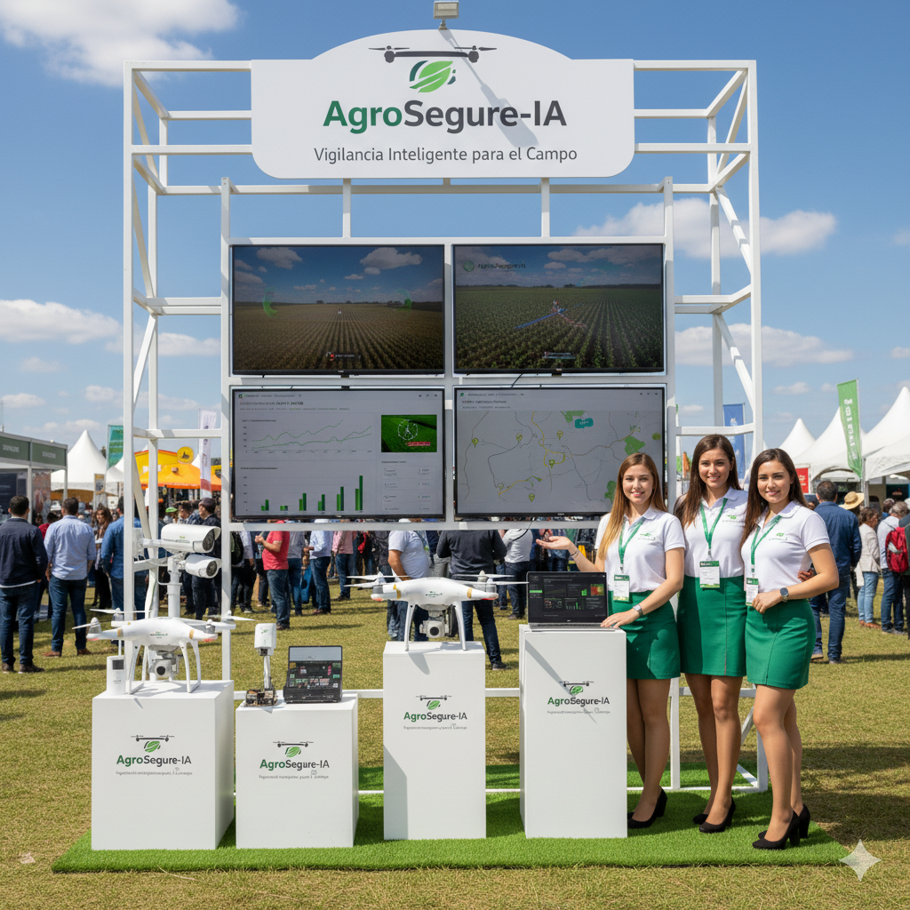
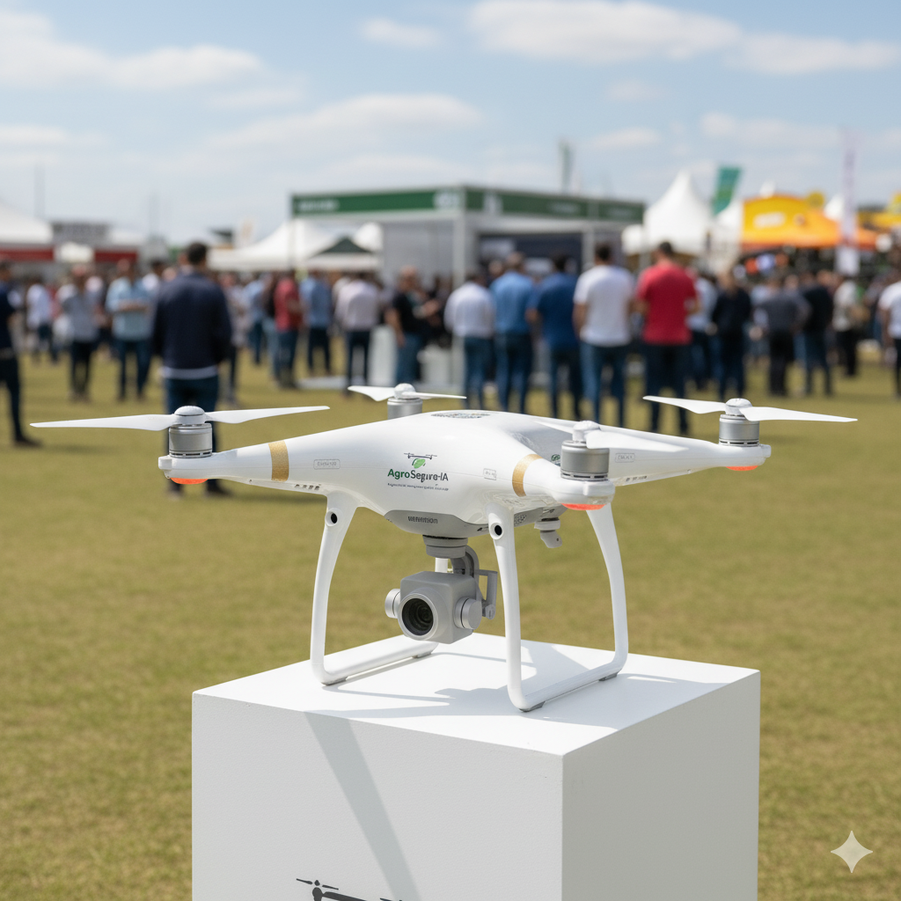

Presentes en las principales exposiciones
Demostramos nuestra tecnología en exposiciones agrarias y congresos nacionales e internacionales.



Protegé tu producción con tecnología IoT, inteligencia artificial y análisis predictivo en una sola plataforma.
Desarrollamos una infraestructura digital unificada, capaz de integrar dispositivos IoT, cámaras, sensores y análisis de datos en tiempo real.
Conectá tu campo al instante. Accedé a tu sistema desde cualquier lugar con sincronización inmediata y almacenamiento seguro en la nube.
Gateways con Raspberry Pi y ESP32 que procesan datos en tiempo real, incluso sin internet, manteniendo tus sensores y cámaras activos todo el tiempo.
Nuestra inteligencia artificial analiza patrones, predice riesgos y envía alertas antes de que ocurra el problema. Más control, menos imprevistos.
Dashboards intuitivos con datos en tiempo real, alertas inteligentes y análisis predictivos.
Monitoreo en tiempo real con alertas activas y sistema de doble línea de defensa perimetral.
Análisis de cultivos con mapas NDVI, monitoreo de humedad del suelo y predicción de deficiencias nutricionales.
Seguimiento GPS del ganado, análisis de salud en tiempo real y alertas de comportamiento anormal.
Los módulos de seguridad, agricultura y monitoreo animal trabajan juntos o por separado, conectados a la nube central para brindarte control total y desde cualquier lugar.
Vigilancia y Seguridad Rural Inteligente.
Agricultura de Precisión y Optimización de producción.
Monitoreo y Salud Animal para una gestión inteligente.
Dispositivos IoT, sensores inteligentes y análisis en la nube trabajando en conjunto.
Plataforma centralizada accesible desde cualquier lugar.
Gateways inteligentes con procesamiento local.
Análisis predictivo y machine learning.
Web, móvil y alertas en tiempo real.
No solo instalamos tecnología: te acompañamos en todo el proceso, para que todo funcione sin preocupaciones.
Analizamos tus necesidades específicas y diseñamos la solución perfecta para tu campo.
Nuestro equipo técnico especializado instala y configura todo el sistema en tu campo.
Te enseñamos a usar la plataforma y aprovechar al máximo todas sus funciones.
Estamos siempre disponibles para resolver cualquier inconveniente o duda que tengas.
Revisiones periódicas para asegurar el óptimo funcionamiento de tu sistema.
Evolucionamos junto a tu negocio con nuevas funcionalidades y mejoras.
Demostramos nuestra tecnología en exposiciones agrarias y congresos nacionales e internacionales.
Empezá con lo que necesitás hoy y escalá según crezcan tus necesidades.
Seguridad Básica
Todo en Seguridad
Ahorro 20%
Ahorro 25%
Ahorro 35%
Para Empresas
Solicitá una demostración personalizada y descubrí cómo AgroSegure IA puede transformar tu producción agropecuaria con tecnología de punta.
Estamos listos para ayudarte a llevar tu producción al siguiente nivel.
agrosegure.ia@gmail.com
+54 (9) 3413724605
+54 (9) 3513032765
Rosario, Santa Fe | Córdoba Capital, Ciudad de Córdoba